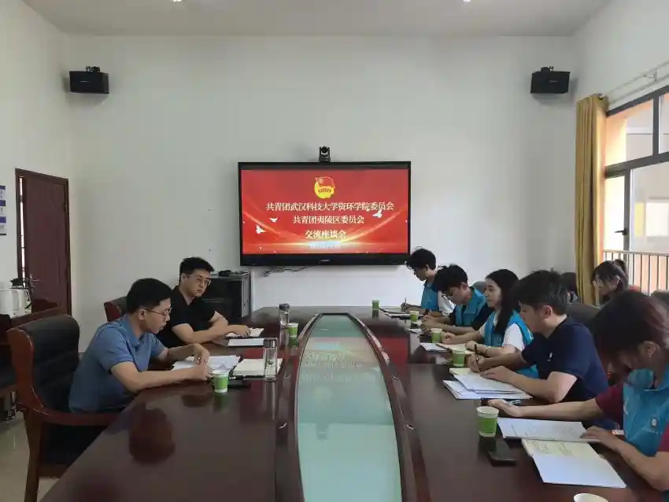

“四个红色“引领青春使命：夷陵区团委创新青年思政实践
本报宜昌7月1日电（记者 [杨涵]） 在庆祝中国共产党成立104周年之际，武汉科技大学资源与环境工程学院“山水梦行”暑期社会实践团队深入湖北省宜昌市夷陵区，专题调研当地共青团组织创新打造的“四个红色”青年思想政治引领实践体系。该体系以红色资源赋能青年成长，探索出一条理论武装与实践育人深度融合的新路径。
调研中，团队通过实地走访、深度访谈、参与体验等形式，系统考察了夷陵区“四个红色”育人体系的运行机制与显著成效。该体系精准发力，构建全方位、立体化青年思政教育新格局：
一是“红色书籍”筑牢信仰之基：精心遴选经典著作与时代读物，组织读书会、心得分享，引导青年在深学细悟中坚定理想信念。 二是“红色路线”赓续精神血脉：依托本土丰富革命历史资源，设计沉浸式研学路线，让青年在重走红色足迹中感悟初心使命、汲取奋进力量。 三是“红色实践”锤炼过硬本领：组织青年投身生态保护、乡村振兴、基层治理等一线，在服务社会、解决问题的具体实践中增长才干、砥砺品格。 四是“红色榜样”引领青春航向：选树宣传在经济社会发展各领域涌现的青年先锋，用身边人身边事激励青年见贤思齐、担当作为。
“我们着力推动红色基因传承与时代发展要求同频共振，引导青年在生态文明建设等国家战略的生动实践中深化思想认识、强化责任担当。”共青团夷陵区委书记刘焯安向调研团队阐释了体系的核心理念。这种将思想引领根植于社会实践的创新模式，与武汉科技大学“山水梦行”团队十年如一日坚持的“实践育人”理念高度契合。“从聚焦长江大保护的系列调研到服务地方发展的科技实践，我们始终致力于将专业课堂延伸至祖国大地，在知行合一中上好‘大思政课’。夷陵区‘四个红色’体系的系统化、制度化探索，为我们提供了极具价值的参考。”“山水梦行”团队指导老师向爱盟表示。
夷陵区团委的创新实践深刻表明，将红色基因的传承与时代赋予青年的使命（如生态文明建设）深度融合，不仅为青年成长成才搭建了坚实平台，更有效激发了广大青年在强国建设、民族复兴伟业中挺膺担当的内生动力。这一探索，是新时代加强和改进青年思想政治工作的生动注脚，有力推动了青春力量在全面建设社会主义现代化国家的火热实践中绽放绚丽之花。